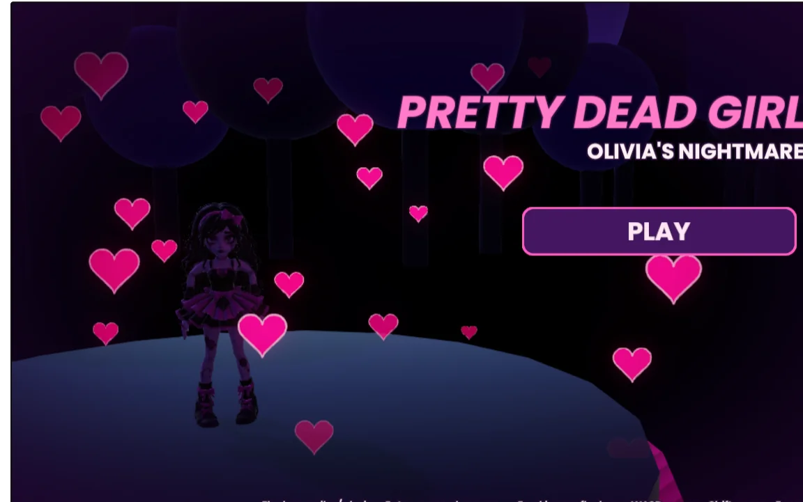
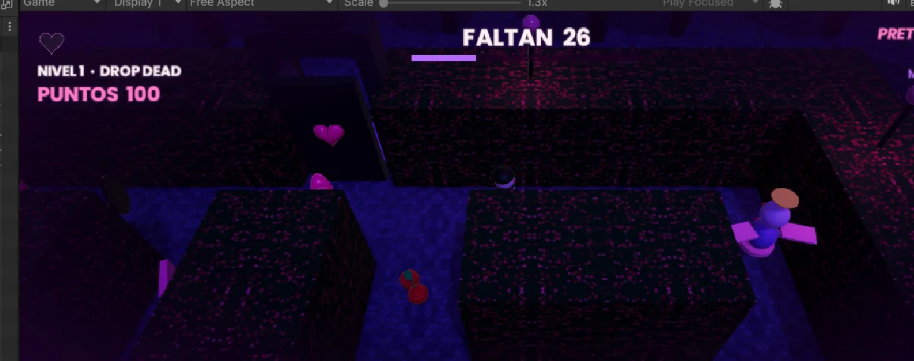

01♥
CAPÍTULO I
DROP DEAD
El inicio de la pesadilla. Conoce las reglas del laberinto, recoge objetos y esquiva las amenazas.
JUGAR NIVEL ↗WELCOME TO OLIVIA'S NIGHTMARE
Un mundo bonito puede esconder la peor de las pesadillas.
Acompaña a Olivia a través de laberintos encantados, objetos misteriosos y enemigos que no piensan dejarla escapar.


01 / LA HISTORIA
En Pretty Dead Girl: Olivia's Nightmare, Olivia se aventura en escenarios oscuros y coloridos donde cada recorrido es una prueba.
Debes explorar el laberinto, encontrar los objetos necesarios y mantenerte lejos de los enemigos para avanzar. Cada nivel trae un nuevo entorno, pero la pregunta es la misma: ¿lograrás salir?
02 / EL RECORRIDO
Tres desafíos dentro de un universo de tonos oscuros, corazones brillantes y peligros inesperados.
El inicio de la pesadilla. Conoce las reglas del laberinto, recoge objetos y esquiva las amenazas.
JUGAR NIVEL ↗Continúa el recorrido y descubre qué desafíos te esperan mientras exploras el siguiente escenario.
JUGAR NIVEL ↗El último capítulo de la aventura de Olivia. Pon a prueba tus reflejos y completa el recorrido.
JUGAR NIVEL ↗03 / DENTRO DEL JUEGO
Imágenes reales capturadas del videojuego desarrollado en Unity.
04 / GUÍA DE JUEGO
Muévete, corre, encuentra los objetos y cambia tu perspectiva para descubrir lo que hay más allá.
CONSEJO: Si no puedes ver un pasillo o un objeto, presiona C para cambiar la cámara.
05 / TU TURNO
Juega la versión WebGL de Pretty Dead Girl directamente en tu navegador. Sin descargas ni instalaciones.
Recomendado para PC con Chrome, Edge o Firefox. Haz clic sobre el juego para usar el teclado. En celulares, algunos controles pueden no estar disponibles.